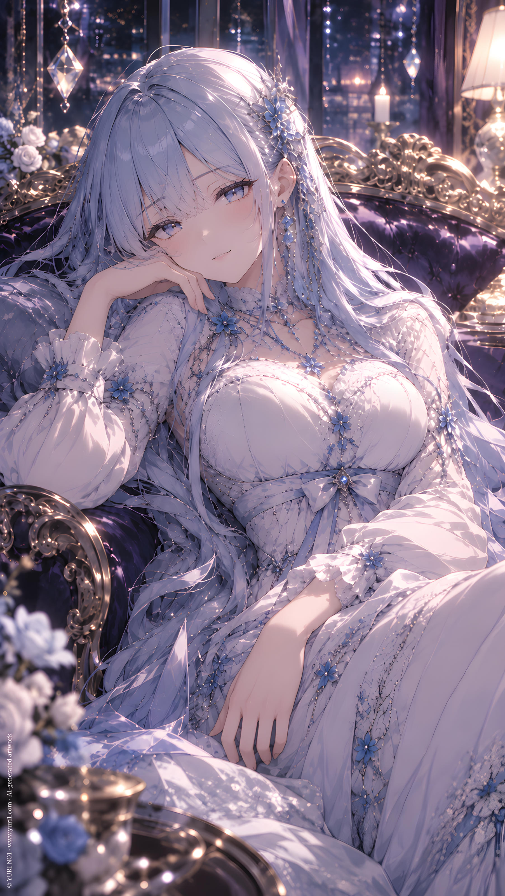

IP／ YURI NO1
D.Cyan
CATEGORYIP
SERIESIP Original Characters
Full Text · YURI NO1
**Full Name:**
DDD Cyan
**Chinese Name:**
蒼
---
**IP:**
DDD
**Primary Appearances:**
DDD Presents
**Character Traits:**
Playful, clingy, proactive, uninhibited, big-sister type
**Hidden Traits:**
Mature
**Primary Love Interest:**
(None)
**Catchphrase / Mannerism:**
""
"~"
"Big Sis Cyan~"
---
**Character Introduction:**
A member of DDD Studio, ranked second among its members. She speaks more directly and often leaves others at a loss for words. She has no fixed romantic interest—or perhaps she can flirt with just about anyone.
She seems to enjoy teasing the other members, sometimes leaving them visibly flustered.